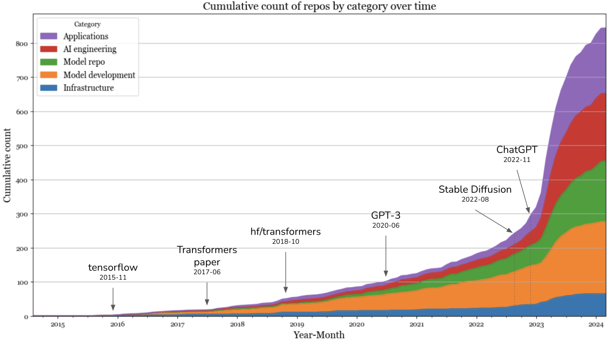
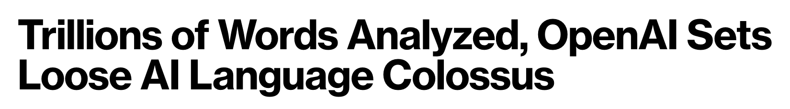
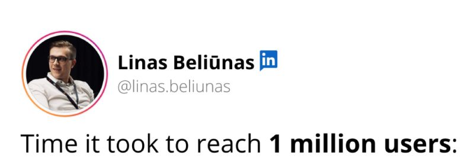
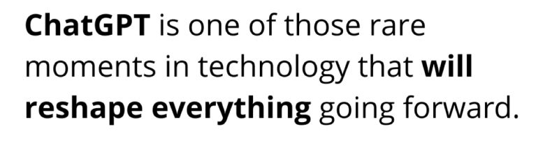
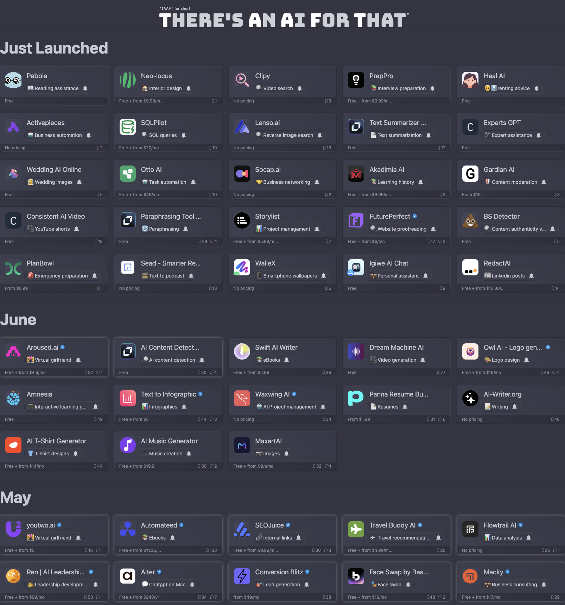
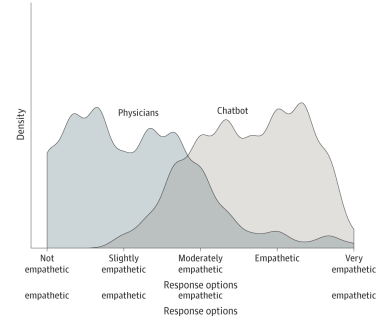
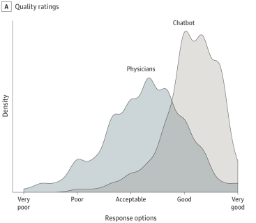
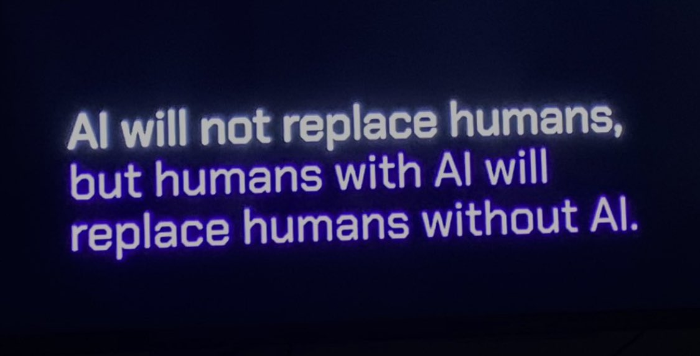

AI with BigBus
Stay standing up if....
- You have used an LLM
- You have used an LLM to write a report
- You have learned something new using an LLM
- You have written an AI voice service
- You have written an AI Agent application
Adam Hall
AI Addict
Wrote Google Digital Garage's AI productivity training
Coached over 70 companies in their AI Adoption
⚠️ Warning Live Demos ⚠️


I think therefor...
I think therefor...
I am
Ask it something simple...
Ask it something simple...
The seahorse emoji 🐠?
The user wants you to...
Lawyer used ChatGPT


Models keep getting better
V1 - Feb 2022

V2 - Apr 2022

V3 - July 2022

V4 - Nov 2022

V5 - Mar 2023

V5.1 - May 2023

V5.2 - June 2023

V6 - Dec 2023

V6.1 - July 2024

V7 - Apr 2025

Keep up to date
Outsource the updates
Don't rely on old models
Research
Research with OpenAI Deep Research
- Get information about a company
- Do analysis on different Software Vendors
- Find the best price on a given thing
- Do a deep dive into a topic
- ChatGPT Deep Research
Research callouts
- Read the actual content
- It can miss key examples, be as specific as possible
- There is an environmental impact, limit the scope
- Be open about how you arrived at the conclusions
Research Alternatives
- OpenAI Deep Research
- Google Deep Research
- Perplexity Deep Research
- Grok Deeper Search
Use AI to take the grunt-work out of research
Classify
Classify with Teachable Machine
- Easily create your own image classification
- Runs offline once trained
- Better for the environment
- Can do audio
- Teachable Machine
Classify callouts
- Time consuming
- You will need an admin process
- Opaque - it will work, but you can't tell why it works
Alternatives to Teachable Machine
- Gradient
- Open Mind
- Label Studio
Make really bespoke user experiences
Right Tool, Right Job

Assess your tools regularly
- Legal
- Ethics
- Price
- Impact
- Interoperability
- Documentation
Focus on the filters first
Productivity Experiment
Context
- Short time period
- 2 separate teams
- Migrate to a new codebase
Traditional
Gen AI
Traditional
Gen AI
15%
Tips
Learn the tools
Work in small teams
Communicate
Learn to use the tools by using the tools
Empathy
Who is more empathetic, humans or AI?

ChatGPT has better bedside manner than Physicians*
ChatGPT has better bedside manner than Physicians*
*according to health-care professionals
ChatGPT has better quality too
How do I benefit from this?
How do I benefit from this?
Difficult emails
I'd like you to rewrite this email. It's for a complaint I have about the way I've been treated.
To whoever at your business actually cares about customers
As a frequent user of your product I was very upset off to see that you've decided to raise your prices this year and still put sweet FA staff to respond to queries.
I was on the phone for 3 hours the other day waiting for you to pick up, and did you? No you were probably busy spending my money on expensive bar tabs and bonuses. I should charge you for your incompetence.
Anyway, I'm writing to tell you I'm giving my notice as a customer and I demand a SIP ref so I can change to a decent supplier
Good riddance
Voice
Give it a persona
GEO
GEO is the new SEO
Generative Engine Optimization
What is it?
- SEO got you ranked in the blue links
- GEO gets you cited inside the AI's answer
- ChatGPT, Perplexity, Gemini, Google AI Overviews
Why does it matter?
- Search is shifting to AI answers
- Fewer clicks, more "zero-click" answers
- You want to be the source the model quotes
How do you do it?
- Write clear, factual statements
- Structure content as questions & answers
- Add schema and an
llms.txt - Earn authoritative citations & brand mentions
- Keep your content fresh
Optimise to be the answer, not the link
MCP
What is MCP?
- Model Context Protocol
- An open standard from Anthropic
- "USB-C for AI"
- Connects LLMs to tools, data & actions
Why does it exist?
- Stop rebuilding bespoke integrations
- Any AI app can talk to any tool
- Agents that do things, not just chat
How does it work?
- MCP servers expose tools & resources
- MCP clients (Claude, IDEs, agents) connect
- Client ↔ MCP server ↔ your data / API
- modelcontextprotocol.io
Build the plug once, every model can use it
Conclusion
What is it good for?
- Productivity
- Learning new things
- Minimum Viable Experiments
- Exploring ideas
- Improving the way you communicate
- Becoming data driven
What is it bad at?
- Single source of Truth
- Reliability
- Complexity & Nuance
- Amplification of bias
- Unique thought
- Specialist domain knowledge
Ginni Rometty
Some people call this artificial intelligence, but the reality is this technology will enhance us. So instead of artificial intelligence, I think we'll augment our intelligence.

by mitch0zᵍᵐ